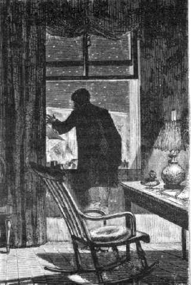
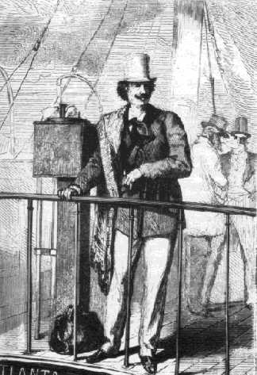

Capítol XVIII
EL PASSATGER DE L'ATLANTA
Si aquesta fulminant notícia,
en comptes de volar sobre els fils elèctrics, hagués arribat simplement
per correu i dins d'un sobre segellat, si els empleats de França, Irlanda,
Terra-Nova i Estats Units no haguessin estat necessàriament assabentats
de la confidència del telegrama, Barbicane no hauria vacil·lat
un sol instant. Hauria romàs callat com a mesura de prudència
i per no deixar en desconsideració la seva obra. Aquell telegrama podia
ocultar una mistificació, sobretot venint per part d'un francès.
Què semblaria que un home fos prou atrevit per a concebre tan sols la
idea d'un semblant viatge? I si aquest home existia, ¿no era un boig
que convenia recloure en una casa de boigs i no dins d'una bala?
Però el telegrama era conegut, car els aparells de transmissió
són poc discrets per llur naturalesa, i la proposició de Miquel
Ardan ja corria pels diversos Estats de la Unió. Així Barbicane
no tenia cap raó per a romandre callat. Va reunir, doncs, els seus collegues
que es trobaven presents a Tampa-Town, i sense deixar entreveure el seu pensament,
sense discutir el més o menys de crèdit que li mereixia el telegrama,
els llegí fredament el lacònic text.
-Impossible! -És inversemblant! - Pura broma!
-Es burlen de nosaltres! - Ridícul! - Absurd! - Tota la sèrie
d'expressions que serveixen per a palesar el dubte, la incredulitat, la ximpleria,
la bogeria, es pronunciaren durant alguns minuts amb l'acompanyament de gestos
propis en semblant circumstància. Cadascú somreia, reia, arronsava
les espatlles o esclafia el riure, segons la seva disposició d'humor.
Només J.-T. Maston tingué una bona paraula.
-Això és una gran idea! - exclamà.
-Sí - li respongué el major -; però, si alguna vegada està
permès de tenir idees com aquesta, ha d'ésser amb la condició
de ni somniar tan sols de posarles en execució.
-I per què no? - replicà amb vigor el secretari del Gun-Club,
disposat com sempre a discutir. Però ningú no li volgué
seguir el corrent.
Mentrestant, el nom de Miquel Ardan corria de boca en boca per la ciutat de
Tampa. Els estrangers i els indígenes es guaitaven, s'interrogaven i
bromejaven, no d'aquest europeu - un mite, un individu quimèric -, sinó
de J.-T. Maston, que havia pogut creure en I'existència d'aquell personatge
llegendari. Quan Barbicane proposà d'enviar una bala a la Lluna, tothom
trobà que l'empresa era natural, factible, un vertader problema de balística!
Però que un ser racional s'oferís a prendre passatge en el projectil,
a intentar aquell viatge inversemblant, era una proposició fantasiosa,
una facècia, una broma, i, per emprar un mot del qual els francesos tenen
precisament la traducció exacta en llur llengua familiar, un "humbug"!1.
Les xanxetes duraren fins al vespre sense parar, i es pot afirmar que tota la
Unió va esclatar en una gran riallada, cosa no gaire corrent en un país
on les empreses impossibles troben de bon grat ponderadors, adeptes i partidaris.
Així i tot, la proposició de Miquel Ardan, com totes les idees
novelles, no deixava pas de remoure certs esperits. Això distreia el
curs de les emocions acostumades. "No s'hi havia pensat, en això!"
Aquest incident esdevingué ben aviat una obsessió per la seva
mateixa sorpresa. S'hi pensava. Quantes coses han estat negades el dia abans
i l'endemà les ha fetes una realitat! Per què aquest viatge a
la Lluna no podria fer-se un dia o altre? Però, en tot cas, l'home que
volgués arriscar-s'hi havia d'ésser boig; i decididament, puix
que el seu projecte no podia ésser pres seriosament, hauria fet millor
de callar, en lloc d'anar a pertorbar tota una població amb aquesta atzagaiada.
Però, de moment, aquell personatge, existia realment? Quina pregunta!
Aquest nom, "Miguel Ardan", no era desconegut a Amèrica! Pertanyia
a un europeu molt anomenat per les seves gestes agosarades. Després,
aquell telegrama, transmès a través de les profunditats de l'Atlàntic,
la designació de la nau en la qual el francès deia haver pres
passatge, la data assenyalada de la seva propera arribada, totes aquestes dades
ajudaven a donar a la proposició un cert caràcter de versemblança.
Calia tenir el cor net. Ben aviat els individus aïllats es formaren en
grups, els grups es condensaren sota l'acció de la curiositat, com els
àtoms en virtut de l'atracció molecular, i, finalment, en va resultar
una multitud compacta que s'encaminà cap a la residència del president
Barbicane.
Aquest, després d'haver rebut el telegrama, no havia dit res més.
Havia deixat dir a J.-T. Maston el seu parer, sense manifestar aprovació
ni blasme; romania quiet i es proposava esperar els esdeveniments. Però
no havia comptat amb la impaciència pública i veié amb
ulls de poca satisfacció com la població de Tampa s'apilotava
dessota de les seves finestres. Ben aviat els murmuris, les vociferacions, l'obligaren
a aparèixer. Es veu que tenia tots els deures, i, per consegüent,
totes les desplaences de la celebritat.
Aparegué. Es féu silenci, i un ciutadà, prenent la paraula,
va preguntar-li resoltament:
-El personatge indicat en el telegrama sota el nom de Miquel Ardan està
en camí cap a Amèrica, sí o no?
-Senyors - respongué Barbicane -, no sé pas més que vosaltres.
-Convé saber-ho! - cridaren algunes veus impacients.
-El temps ens ho dirà - respongué fredament el president.
-El temps no té dret de tenir en suspens per complet tot un país
-reprengué l'orador -. Heu modificat els plànols del projectil,
tal com ho demana el telegrama?
-No encara, senyors. Però vós teniu raó, convé saber
a què atenir-nos. El telegrama, que ha estat el que ha causat tota aquesta
pertorbació, bé podrà completar les seves informacions.
-Al telègraf!, al telègraf! - cridà la multitud.
Barbicane davallà, i, precedint la immensa reunió, va encaminar-se
cap a les oficines de Telègrafs.

El president Barbicane a la seva finestra
Alguns minuts més tard, un telegrama era cursat al síndic dels
corredors de navilis de Liverpool. Se li demanava una resposta a les preguntes
següents: "Quin navili és l'Atlanta?"
"Quan va abandonar Europa?"
"Viatjava a bord un francès anomenat Miquel Ardan?"
Dues hores més tard, Barbicane rebia les informacions amb una claredat
que no deixava lloc a dubtes:
"El vapor Atlanta, de Liverpool, es féu a la mar el 2 d'octubre,
fent rumb per a Tampa-Town, portant a bord un francès registrat al llibre
de passatgers sota el nom de Miquel Ardan".
Davant d'aquesta confirmació del primer telegrama, els ulls del president
brillaren d'una flama sobtada, els seus punys es clogueren violentament i hom
el sentí murmurar:
-Així és cert! és doncs possible que aquest francès
existeixi! D'aquí a quinze dies serà aquí! Però
és un boig!, un cap calent! Mai no ho consentiré...!
I aquell mateix vespre escrivia a la casa Breadwill & CR., pregant-los de
suspendre fins a nova ordre la fosa del projectil.
Ara, contar l'emoció de què fou presa Amèrica entera; com
l'efecte de la comunicació de Barbicane fou deu vegades sobrepassada;
tot el que digueren els diaris de la Unió, la manera com fou rebuda la
notícia i com cantaren l'arribada d'aquell heroi del vell continent;
descriure la febril agitació en què cadascú visqué
comptant les hores, els minuts i els segons; donar una idea, encara que afeblida,
d'aquella obsessió fatigant de tants cervells dominats per un únic
pensament; mostrar les ocupacions cedint a una sola preocupació; els
treballs suspesos, el comerç paralitzat, els navilis a punt de partir
i que restaven ancorats al port per tal d'estar presents a l'arribada de l'Atlanta;
els combois arribant plens i retornant buits, la badia Espíritu Santo
incessantment solcada pels vapors, paquebots, els yachts de plaer, els fly-boats
de totes dimensions; enumerar aquells milers de curiosos que quadruplicaren
en quinze dies la població de Tampa-Town i hagueren d'acampar sota tendes
com un exèrcit en campanya, és una tasca per damunt de les forces
humanes i que hom no sabria emprendre sense temeritat.
El 20 d'octubre, a les nou del matí, els semàfors del canal de
Bahama assenyalaren una espessa fumera a l'horitzó. Dues hores més
tard, un gran vapor bescanviava els senyals de reconeixement. De seguida el
nom de l'Atlanta fou expedit a Tampa-Town. A les quatre, la nau anglesa entrava
en la rada d'Espíritu Santo. A les cinc franquejava els baixos de la
rada Hillisboro a tot vapor. A les sis ancorava en el moll de Tampa.
No havia tocat l'àncora encara el fons de sorra, que cinc-centes embarcacions
rodejaven l'Atlanta i el vapor era pres a l'assalt. Barbicane, primer que ningú,
pujà a coberta i amb una veu en la qual pretenia en va contenir l'emoció:
-Miquel Ardan! - cridà.
-Present! - respongué un individu que estava a dalt de l'entrepont.
Barbicane, amb els braços encreuats, l'ull interrogador, la boca closa,
guaità fixament el passatger de l'Atlanta.

Nichel Ardan
Era un home de quaranta-dos anys, gran, però ja un poc corbat, com aquestes
cariàtides que porten els balcons damunt llurs espatlles. E1 seu cap
enèrgic, veritable testa de lleó, sacsejava per instants una cabellera
roja que li feia de veritable crinera. Un rostre curt, ample als polsos, agençat
d'un bigoti esborrifat com les barbes d'un gat i d'uns petits flocs de pèls
groguencs que li esquitxaven les galtes, ulls rodons si bé un xic extraviats,
com una mirada de miop, completaven aquella fesomia eminentment felina. Però
el nas era d'un dibuix atrevit, la boca particularment humana, el front alt,
intel·ligent i solcat com un camp on no han deixat res erm. Finalment,
un tors molt desenrotllat i descansant verticalment sobre unes llargues cames,
braços musculosos, palanques poderoses i ben fixades, i amb un pas decidit,
feien d'aquest europeu un minyonàs ben plantat, "més aviat
forjat que fos", per manllevar una de les expressions de l'art metal·lúrgic.
Els deixebles de Lavater o de Gratiolet haurien desxifrat sense cap dificultat
en el crani i la fesomia d'aquell personatge els senyals indiscutibles' de la
combativitat, o sia del coratge en el perill i de la tendència a vèncer
els obstacles i també els de la benevolència i aquells altres
de colpir d'admiració - instint que duu certs temperaments a apassionar-se
per les coses sobrehumanes. Però, en canvi, les protuberàncies
de l'adquisitivitat, de la necessitat de posseir i adquirir, li mancaven per
complet.
Per a acabar la descripció del tipus físic del passatger de l'Atlanta,
convé remarcar que els seus vestits eren folgats, sense oposar dificultats.
El seu pantalon i el seu gavany eren tan amples, que Miquel Ardan s'anomenava
ell mateix "la mort amb capa". Anava amb la corbata afluixada al coll
de la camisa, molt escotat, i d'on sortia un coll robust, i els punys invariablement
descordats, a través dels quals s'escapaven unes mans febrils. Bé
prou que es veia que, àdhuc en el més fort dels hiverns i dels
perills, aquell home no havia de tenir mai fred - ni àdhuc als ulls.
A més de tot això, dalt del pont del vaixell, enmig de la gentada,
anava, venia i no sabia mai estar quiet, "garrejant sobre ses àncores",
com diuen els mariners, gesticulant, tutejant a tothom i rosegant-se les ungles
amb una avidesa nerviosa. Era un d'aquests originals que el Creador inventa
en un moment de fantasia i trenca tot seguit el motllo.
Certament, la personalitat moral de Miquel Ardan oferia un vast camp a les observacions
de l'analista. Aquell home sorprenent vivia en una perpètua disposició
a la hipèrbole i encara no havia sobrepassat l'edat dels superlatius.
Els objectes es fixaven a la retina del seu ull amb unes dimensions desmesurades,
i d'ací una associació d'idees gegantines. Tot ho veia gran, llevat
de les dificultats i els homes.
Ultra això, era d'un natural exuberant, artista per instint, un minyó
espiritual, que si bé no feia un foc granejat d'acudits, en canvi s'ufanava
més com a tirador. En les discussions era poc curós de la lògica;
rebel al sil·logisme, que mai no hauria inventat, tenia tanmateix cops
ben bé seus. Sense tenir miraments, escometia de dret arguments ad hominem
d'un efecte segur, i li plaïa defensar amb el bec i les potes les causes
desesperades.
Entre altres manies seves, tenia la de proclamar-se com Shakespeare, "un
ignorant sublim", i feia gala de menysprear els savis. "Són
gents - deia -que no fan sinó marcar els punts quan nosaltres juguem
la partida". Era, en resum, un bohemi del país de les meravelles,
aventurós, però no aventurer, un temerari, un Faetó menant
a tota brida el carro del Sol, un Ícar amb ales de recanvi. Això
de banda, pagava de la seva persona i pagava bé, es llençava amb
el cap alt en les més folles empreses, cremava les seves naus amb més
braó que Agatocles i, disposat a trencar-se la nou del coll, acabava
invariablement caient dempeus, com aquests pallassets amb bola de plom amb els
quals els infants tant es distreuen.
En dues paraules, la seva divisa era: Malgrat tot! i l'amor de l'impossible
la seva "ruling passion"2, segons la bella expressió
de Pope.
Així i tot, aquell minyonàs emprenedor tenia com ningú
els defectes de les seves qualitats! Qui no s'arrisca no pisca, hom diu. Doncs
Ardan arriscava sovint i no tenia res. Era un malversador, una bóta de
les Danaides. A més d'ésser un home completament desinteressat,
feia tantes bones obres com calaverades. Caritatiu, cavalleresc, no hauria firmat
la sentència de mort del seu més cruel enemic, i, en canvi, s'hauria
venut com a esclau per rescatar un negre.
A França, a Europa, tot el món el coneixia, aquest personatge
brillant i sorollós. ¿No en parlaven sense parar les cent trompetes
de la fama, que ja estaven enrogallades de tant de temps d'estar al seu servei?
¿No vivia en una casa de vidre, prenent l'univers sencer per confident
dels seus secrets més íntims? Així i tot, no deixava de
tenir una admirable col·lecció d'enemics, entre aquells que havia
més o menys molestat, ferit o trepitjat sense pietat, en obrir-se pas
a cops de colze per entre la gentada.
En general, tanmateix, se l'estimava, i se'l tractava com un infant afalagat.
Era, segons l'expressió popular, "un home per prendre o per .deixar",
i hom el prenia. Cadascú s'interessava per les seves agosarades empreses
i se'l seguia amb una mirada inquieta. Hom sabia que era tan atrevit imprudentment!
Quan algun amic el volia deturar per fer-li veure una catàstrofe propera,
responia amb un somriure bondadós: "El bosc no és cremat
pels seus propis arbres", sense saber que en dir això no feia més
que esmentar el més bell dels proverbis aràbics.
Aquest era el passatger de l'Atlanta, sempre mogut, sempre ardent sota l'acció
d'un foc interior, sempre commòs, no pel que venia a fer a Amèrica
- ell, en això, no hi pensava -, sinó per l'efecte de la seva
organització febrosenca. Si mai individus han ofert un contrast colpidor,
aquests han estat el francès Miquel Ardan i el ianqui Barbicane, tot
i ésser ambdós emprenedors, ardits, audaços, si bé
cadascú a la seva manera.
L'examen a què es lliurava el president del Gun-Club en presència
d'aquell rival que venia a relegar-lo a segon terme fou aviat interromput pels
hurres i els visques de la multitud. Aquests crits esdevingueren àdhuc
tan frenètics, i l'entusiasme prengué unes formes tan personals,
que Miquel Ardan, després d'haver estret un miler de mans en les quals
per poc deixa els deu dits, s'hagué de refugiar a la seva cabina.
Barbicane l'hi seguí sense haver dit una paraula.
-Sou vós Barbicane? - va preguntar Miquel Ardan així que estigueren
sols, i en el to en què hauria parlat a un amic de vint anys.
-Sí - respongué el president del Gun-Club.
-Bé, bon dia, Barbicane. Com va això? Molt bé? Vaja, millor!,
millor!
-Així - digué Barbicane sense altra entrada en matèria
-, esteu decidit a partir?
-Absolutament decidit.
-Res no us deturarà?
-Res. Heu modificat el vostre projectil tal com us deia en el meu telegrama?
-Jo esperava la vostra arribada. Però - preguntà Barbicane insistint
de nou -, ja us hi heu pensat bé?
-Pensat! Però que potser tinc temps per perdre? Jo veig l'avinentesa
d'anar a donar un tomb per la Lluna i me n'aprofito, i això és
tot. Em sembla que no cal pensar-s'hi tant.
Barbicane devorava amb la mirada aquell home que parlava del seu projecte de
viatge amb una lleugeresa, amb una descurança tan completa com amb una
tan perfecta absència d'inquietuds.
-Però almenys - li digué - vós deveu tenir un pla, mitjans
d'execució...
-Excel·lents, estimat Barbicane. Però permeteu-me de fer-vos una
observació. A mi m'agrada de contar la meva història una sola
vegada, a tothom, i després no tornar-ne a parlar més. Això
estalvia les repeticions. Doncs bé, llevat d'un millor parer vostre,
convoqueu els vostres amics, els vostres col·legues, tota la ciutat,
tota la Florida, tot Amèrica si voleu, i demà estaré disposat
a explicar els meus mitjans així com a respondre a totes les preguntes
que se'm facin. Estigueu tranquil, les esperaré amb peu ferm. ¿Us
va bé això?
-Això em va bé - respongué Barbicane.
Un cop dites aquestes paraules sortí el president de la cabina i donà
part a la gentada de la proposició de Miquel Ardan. Les seves paraules
foren acollides amb picaments de peus i crits de joia. Això tallava ras
i curt a qualsevol entrebanc. L'endemà, cadascú podria contemplar
a cor què vols l'heroi europeu. Malgrat tot, alguns espectadors més
tossuts no volgueren abandonar el pont de l'Atlanta i passaren la nit a bord.
Entre altres, J.-T. Maston, que havia enganxat la seva mà postissa en
un angle de l'entrepont i hauria calgut un cabrestant per a arrencar-la.
-És un heroi!, un heroi! - exclamava en tots els tons de veu -, i nosaltres
no som més que unes donetes comparats amb aquest europeu!
Pel que fa al president Barbicane, després d'haver pregat als visitants
de retirar-se, retornà a la cabina del passatger i no en va sortir fins
al moment que la campana del vaixell tocà al canvi de la guàrdia
de mitjanit.
Però llavors els dos rivals en popularitat s'estrenyeren càlidament
la mà, i ja Miquel Ardan tutejava el president Barbicane.
1. Mistificació.
2. Passió dominant.